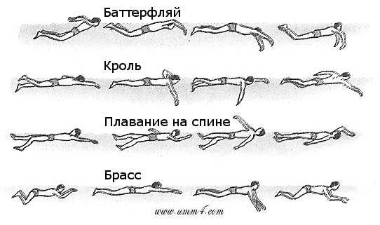

|
Спорт - немов всесвіт. У ньому теж запалюються і загасають зірки | ||
Меню |
ПлаванняПлавання – один з найпопулярніших видів водного спорту, що існує багато століть. Найпопулярніші змагання з плавання проходять на Чемпіонаті світу з водних видів спорту та Олімпійських іграх. Дозволяє поліпшити фізичну форму і витривалість. Вода у 8 разів щільніша за повітря. У воді наше тіло перебуває наче в стані невагомості, нема навантажень на суглоби та кістки, на відміну від інших видів спорту, відбувається рівномірне тренування всього тіла. Плавання підходить людям різних вікових категорій та рівня підготовки, комплекції. Ним рекомендують займатися навіть під час вагітності, для підготовки до пологів. Під час тренувань у басейні організм загартовується, відбувається тренування судин, нормалізується артеріальний тиск, зміцнюються глибокі м'язи спини і пресу, що дуже важливо для людей із сидячим способом життя. Обмін речовин прискорюється на 50-75%, адже різниця між температурою тіла та водним середовищем активізує обмінні процеси. Регулярні заняття у воді зроблять ваше тіло гнучким, витривалим і сильним, дихання спокійним, а думки ясними. |
Основні стилі плавання
|
|
|

|
|||
|
Обирайте найкраще для себе! | ||